Case Study
Turn-Based RPG Mockup
Background
In December 2025, my intro to media design teacher allowed each student to pick a topic for the final project. I decided to create assets for a hypothetical turn-based video game in which the player controls a sorcerer fighting his way out of a demon-infested Constantinople.
I wanted to use this project as an opportunity to practice creating a large number of thematically cohesive UI assets under a tight time constraint. Listed below are the goals I set for myself to ensure the project was of sufficiently high quality.
Iterate quickly so the deadline can be met.
Create narrative and visual cohesion.
Ensure all UI assets are easily identifiable at small sizes and are visually distinct from one another
Concept
Now that my goals were set, I set out to specify what contexts and design systems would give me interesting problems to solve.
Narrative: I needed a unique story to build a game around.
Setting: Constantinople, 542 CE. Those whose lives were taken by the Justinian Plague are rising from shallow graves. Their masters begin to rise as well.
Plot: The user will play as a young medical sorcerer named Petrus. As a recent graduate of a secretive medical college, Petrus must use his newfound mastery of the 4 humors to carve a path out of Constantinople.
Asset creation: I needed gameplay systems to design assets for, and goals to set for the visual style.
Gameplay: Petrus uses magic to survive. Each spell is based on one of the four humors with the addition of some spells that blend 2 humors together.
Visual style: The art style will be jagged, dark, and dingy. It is supposed to evoke feelings of fear, disgust, and danger. It needs to remind the player that they are in an apocalyptic event.
Sketches
I wanted to quickly nail down a visual style, so I decided to start off by drawing Petrus. I used this mosaic of King Justinian’s retinue as inspiration for Petrus. He is supposed to have the personality of a jaded academic, hence the tired eyes. I drew a few other potential enemies and environments in an attempt to visualize the world I would create. I also drew thumbnails for the blood spells that would be illustrated digitally.
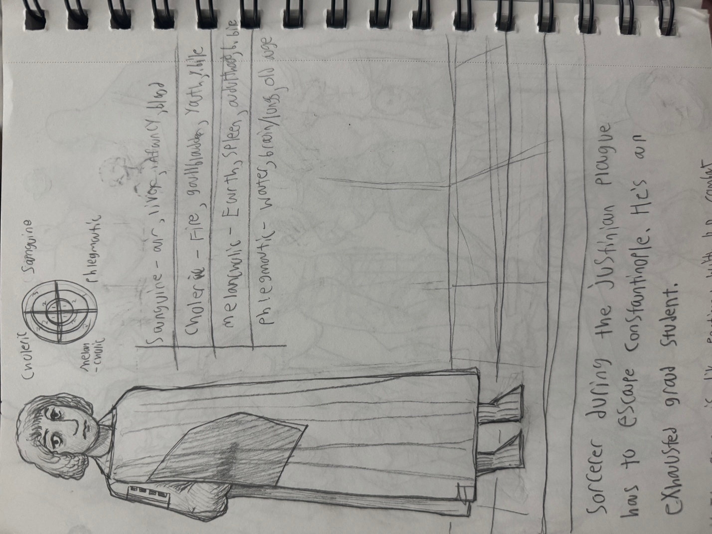
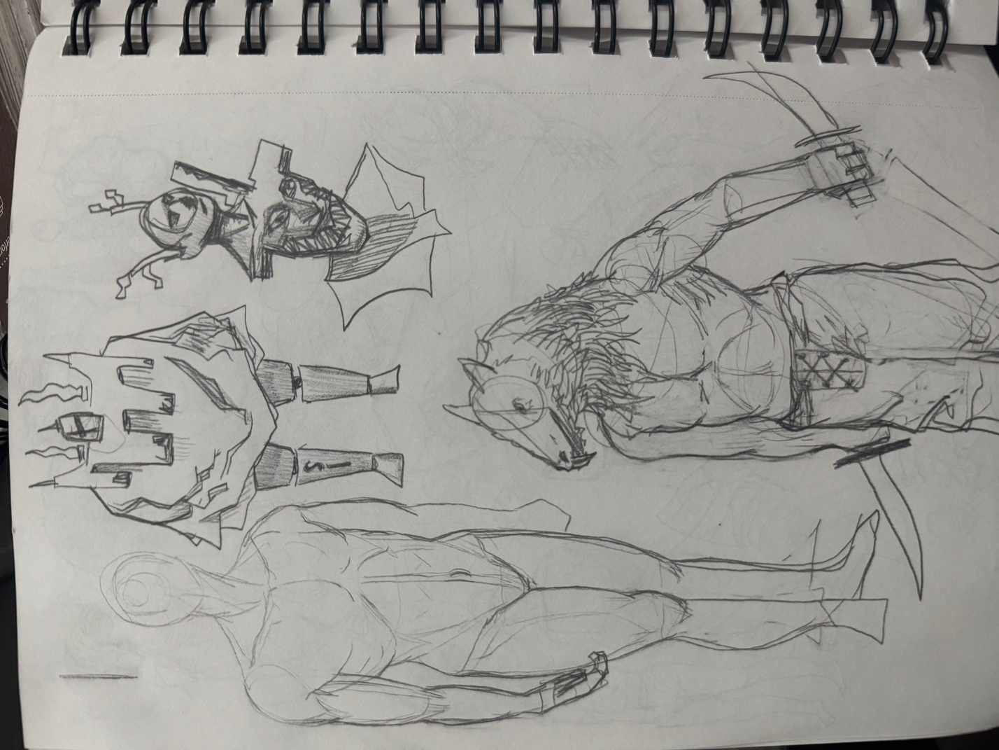
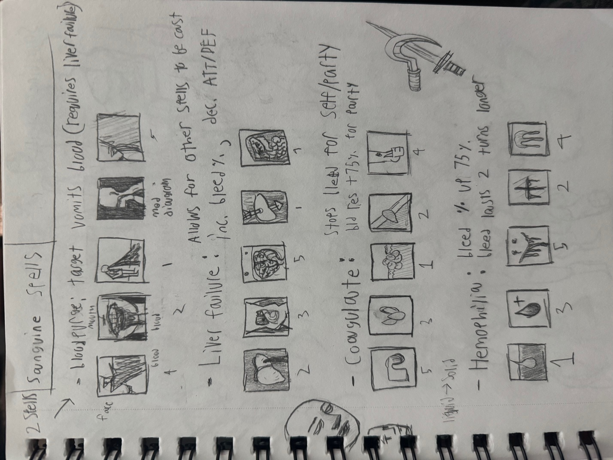
Spell Icons
Now that I had thumbnails and a list of spells, I started working digitally. I used a tiny canvas size of 150x150 pixels to give the spells a crunchy texture. The first spell I drew was Harvest, a blood/blackBile spell that steals health from enemies. I wasn’t super happy with how this initially turned out, and went back to the proverbial drawing board.
A new workflow:
A gripe I had with the harvest drawing was its lack of weight and visual boldness. The scythe looked like it was skipping meals. I was focusing too much on lines rather than shapes. This led me to look for heavier digital brushes. I stumbled upon the brushes used by RedHookStudios to make Darkest Dungeon’s sprites, played around with them, and never looked back. Using the new brushes, I started to knock out each category of spells at a time in the order in which they are listed below. Each icon took between 20 minutes to an hour to create.
Blood Spells: Starting to get a feel for the style.
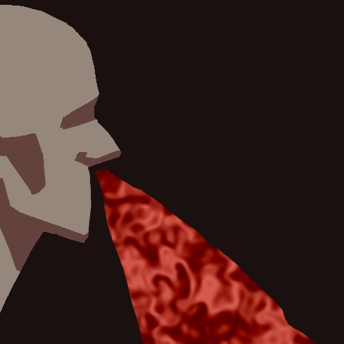
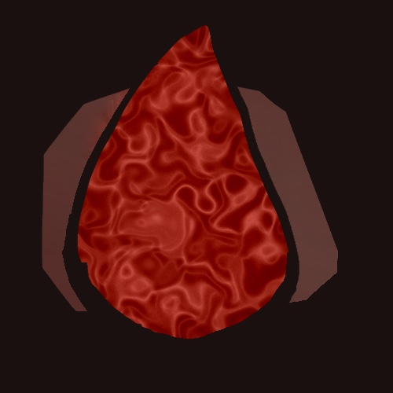
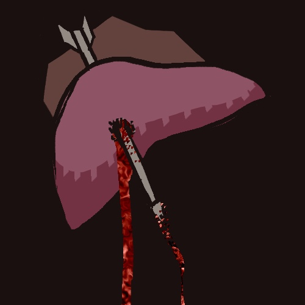
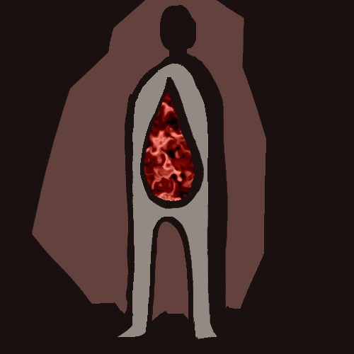
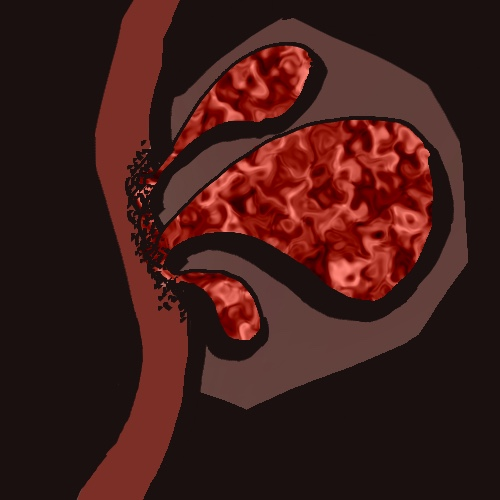
Phlegm Spells: Pushing further, adding complexity, trying textures.
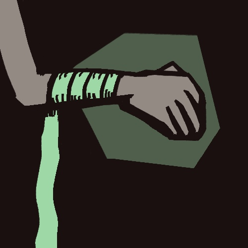
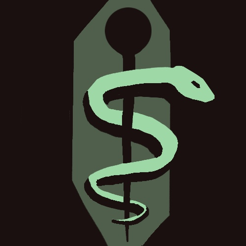
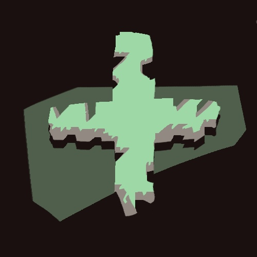
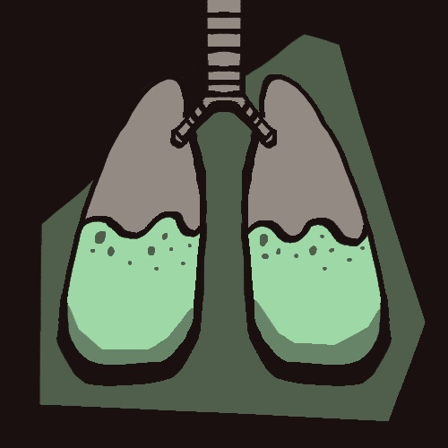
Black Bile Spells: Found my footing and a style I was happy with. The strongest of the single humor categories in my opinion.
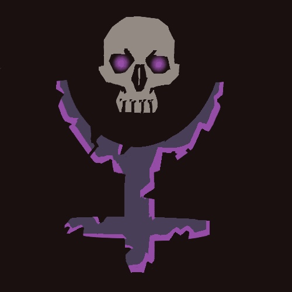
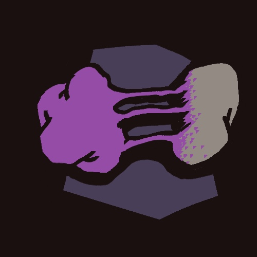
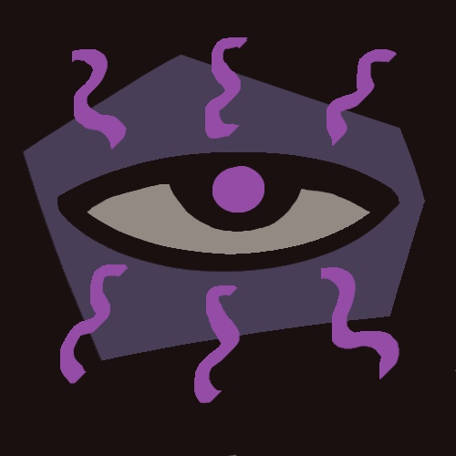
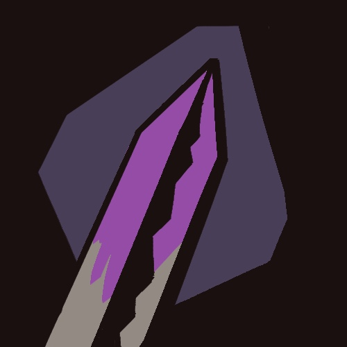
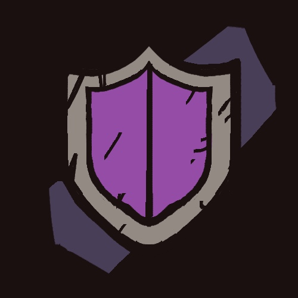
Yellow Bile Spells: Pushing the style and differentiating from the blood spells.
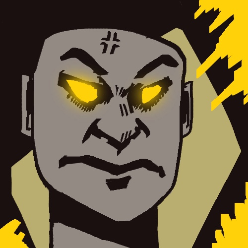
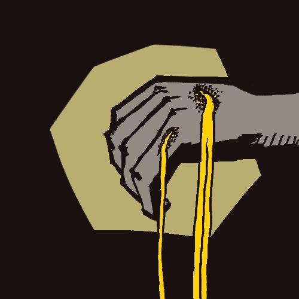
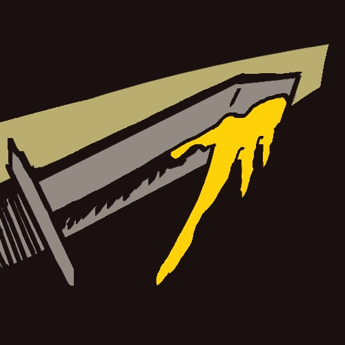
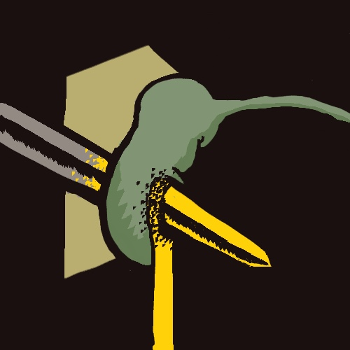
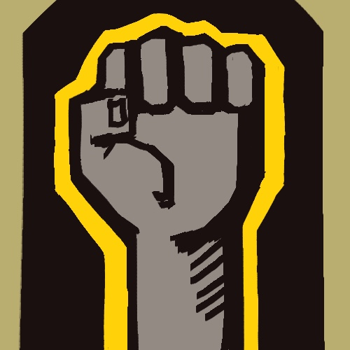
Combination Spells: Figuring out how to mend the color palettes in a way that wasn’t ugly proved difficult. Made me leave my comfort zone. Strongest and weakest pieces reside in this category.

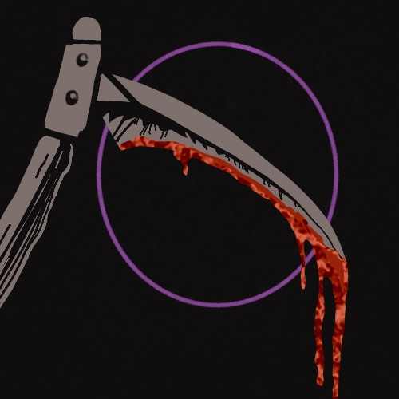
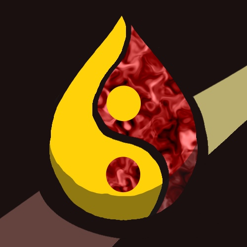
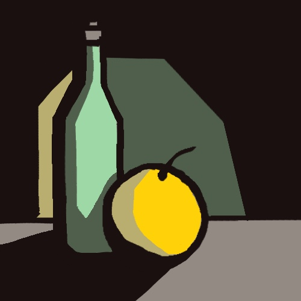
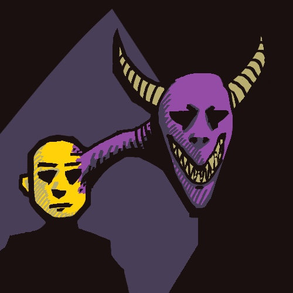

Gameplay Screen
First draft
While the icons were the focus of this project, I decided to use the remaining time I had to show what the game would look like in a playable state. As these assets were comparatively less important, I decided to draw these screens directly in procreate. I tried to give the screen a traditional feel by using pencil brushes as a tool to apply texture.
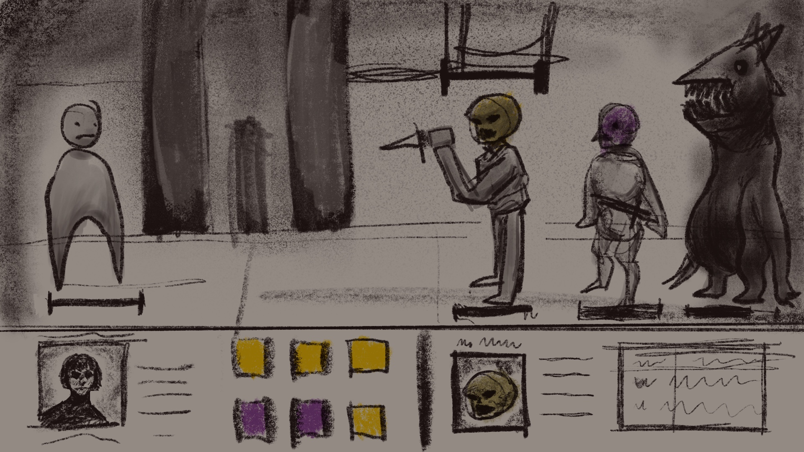
Second draft
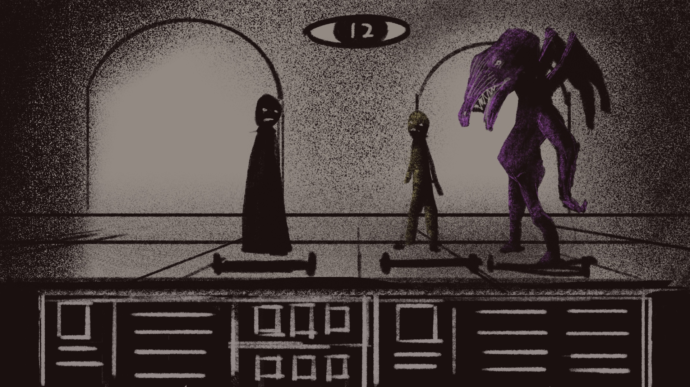
Final draft
I refined the UI, added a turn timer mechanic, and generally increased the asset fidelity.
The final gameplay screens show a relatively high-fidelity representation of what the end product would look like. The top screen shows combat and the bottom screen shows exploration. These screens serve as a way to test if the icons read at the size they would be during gameplay. Even while squinting, I find the icons easy to tell apart: mission success!
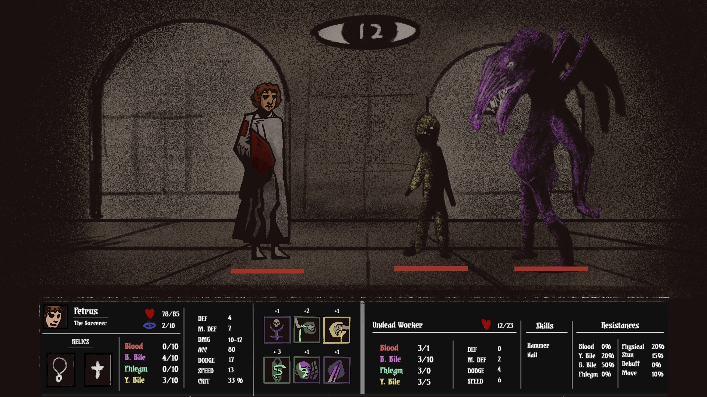
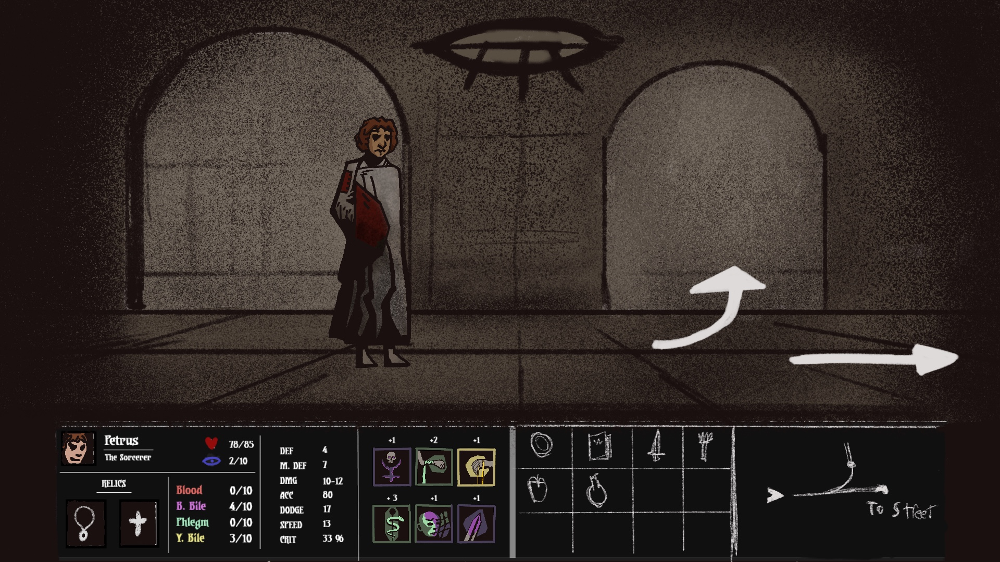